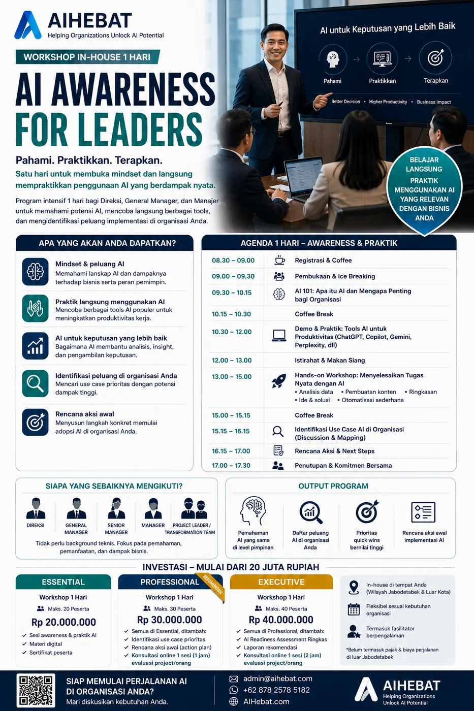
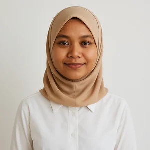
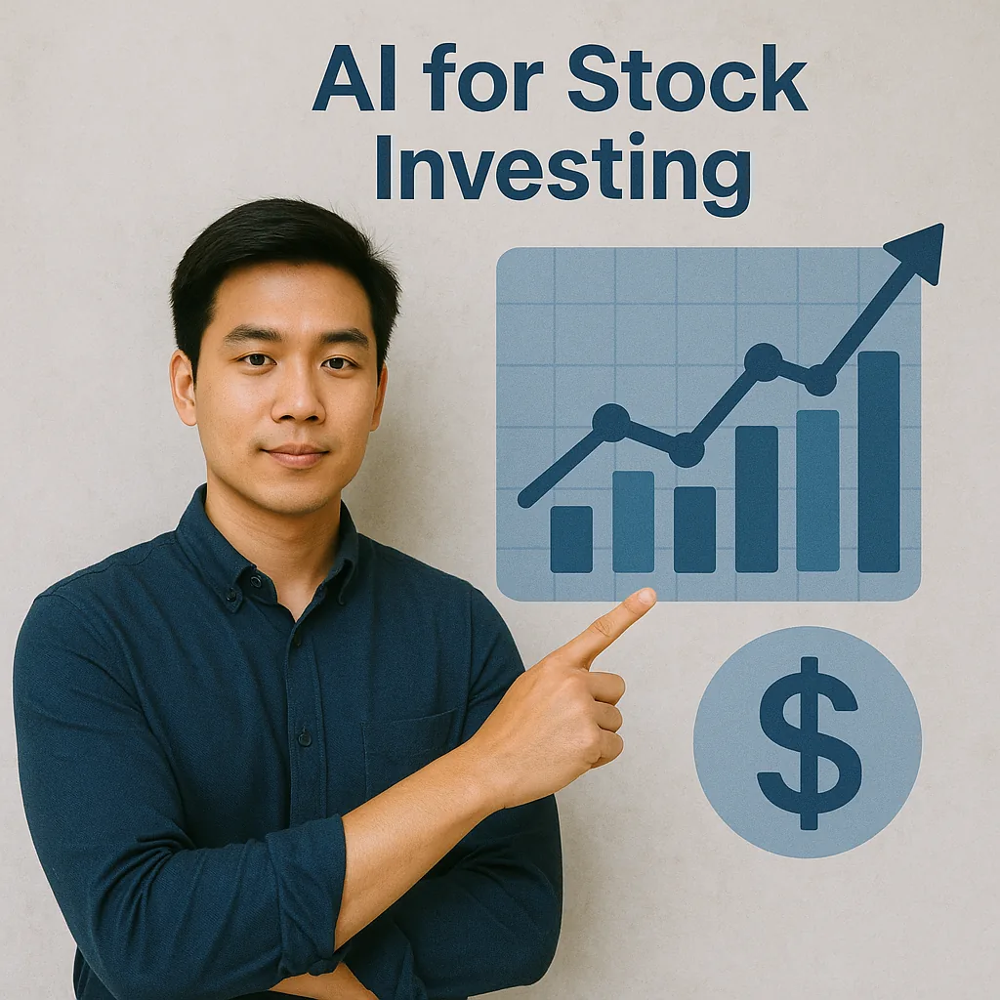

AI Bikin Cuan Investasi Saham
Baca Selengkapnya

AIHebat mengembangkan metodologi, standar kompetensi, dan jaringan kolaborasi untuk membantu organisasi menerapkan Artificial Intelligence secara konsisten, bertanggung jawab, dan berdampak.

Beragam institusi, perusahaan, dan profesional berinteraksi dengan AIHebat dalam edukasi, asesmen, pengembangan metodologi, dan adopsi kecerdasan buatan.


AIHebat adalah ekosistem profesional yang mempercepat adopsi Artificial Intelligence di Indonesia melalui metodologi, standar kompetensi, dan jaringan kolaborasi partner.
Visi AIHebat adalah menjadi ekosistem profesional terpercaya dalam pengembangan dan implementasi Artificial Intelligence di Indonesia. Misinya mencakup edukasi, kolaborasi, pengembangan standar, dan penerapan metodologi yang dapat digunakan secara konsisten oleh seluruh partner AIHebat.
Pelajari Posisi AIHebatAIHebat adalah organisasi yang mengembangkan metodologi, menjaga kualitas, dan membangun ekosistem profesional AI.
AIHebat berperan sebagai pengembang metodologi, penjaga standar kualitas, dan penghubung kolaborasi profesional untuk implementasi AI yang terarah.
Ekosistem AIHebat dibangun di atas pilar yang menjaga arah, kualitas, dan keberlanjutan kolaborasi.
AIHebat menjalankan prinsip transparansi, independensi, profesionalisme, akuntabilitas, integritas, dan kepatuhan terhadap Good Corporate Governance (GCG).
Untuk menjaga keberlanjutan ekosistem, AIHebat dapat memperoleh pendanaan dari berbagai sumber yang sah dan transparan.
AIHebat hadir sebagai ekosistem profesional yang mengembangkan standar, metodologi, dan jaringan partner untuk mempercepat adopsi kecerdasan buatan secara konsisten di Indonesia.
AIHebat berfokus pada pengembangan metodologi, standar kompetensi, partner network, dan quality assurance untuk mempercepat adopsi AI di Indonesia.
Partner tetap menjalankan usahanya secara independen dengan identitas masing-masing. AIHebat memfasilitasi metodologi, standar, pengembangan kapasitas, dan quality assurance.
Setiap kegiatan dapat didampingi Quality Representative AIHebat untuk memastikan metodologi diterapkan dengan benar, kualitas terjaga, dan evaluasi peserta dilakukan secara objektif.


Teknologi kecerdasan buatan (AI) membantu meningkatkan berbagai keterampilan manusia, baik dalam pekerjaan teknis maupun kreatif, dengan efisiensi dan presisi yang lebih tinggi.
AIHebat memfasilitasi adopsi AI melalui standar, pengembangan kapasitas, kemitraan, dan pengawalan kualitas.
Standar pendekatan untuk edukasi, asesmen, dan implementasi AI yang dapat diterapkan secara konsisten oleh partner.
Registrasi, pengenalan, Training of Trainer, evaluasi, dan penetapan sebagai Certified Partner.
Pendampingan Quality Representative untuk menjaga metodologi, mutu pelaksanaan, dan evaluasi objektif.
Pengembangan pengetahuan, forum kolaborasi, dan jejaring profesional untuk adopsi AI di berbagai sektor.
AIHebat mendorong penerapan AI melalui tahapan yang terstruktur, terukur, dan dapat diaudit kualitasnya.

Memetakan kesiapan organisasi, masalah prioritas, data yang tersedia, dan tujuan implementasi AI yang realistis.

Menyiapkan pendekatan kerja, materi, kompetensi tim, dan simulasi penerapan sebelum implementasi lebih luas.

Melaksanakan program atau proyek bersama partner dengan pengawalan mutu, dokumentasi hasil, dan evaluasi objektif.
Diskusikan kebutuhan organisasi, kemitraan, atau pengembangan metodologi bersama AIHebat. Kami membantu menyusun arah adopsi AI yang terstruktur, transparan, dan terjaga kualitasnya.
Portofolio solusi AI untuk produktivitas kerja, pengambilan keputusan, ESG, enterprise workflow, pembelajaran, dan operasional lapangan.
Saya telah membangun solusi mulai dari chatbot, AI agent, analisis risiko, ESG reporting, dashboard eksekutif, workflow enterprise, machine learning, sampai aplikasi mobile operasional.
Sistem manajemen risiko perusahaan skala besar untuk mengatur ownership risiko lintas level organisasi, anak perusahaan, dan dukungan AI assistant.
Platform pengelolaan CSR/BUMN dari proposal bantuan, verifikasi, pencairan dana, laporan mitra binaan, audit, kolaborasi, sampai MFA.
Solusi AI untuk menilai kesiapan perusahaan menghadapi risiko perubahan iklim melalui input data, dokumen bukti, scoring, dan laporan akhir.
AI membaca laporan tahunan atau sustainability report PDF, mengecek kesesuaian terhadap standar GRI, dan menghasilkan output Excel.
Chatbot AI internal untuk menjawab pertanyaan tentang dokumen dan aturan perusahaan dengan mengambil referensi dari dokumen resmi.
Aplikasi untuk memantau proyek dan tugas tim: login, kelola proyek, anggota, filter risiko, dashboard progres, dan versi desktop.
Solusi analisis risiko dengan model statistik dan AI: prediksi kesehatan keuangan, okupansi operasional, Monte Carlo, fault tree, dan chatbot risiko.
Aplikasi untuk mengelola data lingkungan dan keberlanjutan perusahaan, termasuk emisi karbon, approval workflow, anomali, dashboard, dan laporan.
Aplikasi prediksi saham dengan machine learning yang membaca data historis dan transaksi broker untuk membantu analisis peluang pasar.
Prototipe AI agent pribadi yang memecah satu tujuan menjadi langkah kerja kecil dan meminta persetujuan sebelum aksi berdampak keluar sistem.
Website AIHebat dengan profil, blog, portofolio, materi edukasi, dan alat asesmen online interaktif untuk readiness AI.
Prototipe media sosial profesional ala LinkedIn untuk talenta muda, dengan feed, profil, mentoring, lowongan, pendanaan, dan komunitas.
Sistem pemantau kualitas data perusahaan yang mengawasi kualitas, konsistensi operasional, keamanan, kepatuhan, dan data master.
Dashboard pemantauan mitra binaan UMKM dengan filter provinsi, kota, sektor usaha, status pinjaman, pengembalian, dan grafik interaktif.
Dashboard untuk memantau kesiapan 108 cabang menghadapi penilaian PROPER, lengkap dengan login, grafik, ranking, dan pengelolaan data admin.
Aplikasi mobile keselamatan kerja lapangan untuk pelatihan K3, ujian, absen keselamatan harian, laporan insiden, notifikasi, dan briefing.
Prototipe aplikasi pendamping petugas klaim asuransi, mulai dari pendaftaran kasus baru sampai alur awal pemrosesan klaim.
Aplikasi belajar untuk tanya-jawab materi, ringkasan otomatis, flashcard, dan latihan kuis dengan bantuan AI.
Aplikasi desktop untuk membuat, mengirim, dan membalas email Gmail lewat perintah bahasa sehari-hari.
Platform buku digital untuk upload buku, atur bab, kategori, media, statistik pembacaan, dan arah pengembangan ke knowledge platform berbasis AI.
Platform komik digital bergambar yang membuat cerita dan video otomatis dengan AI, dilengkapi aplikasi mobile dan backend pemrosesan konten.
Chatbot AI berbasis Gemini yang dibangun di atas open-source OpenClaw sebagai eksperimen produktivitas dan interface percakapan.
Kumpulan eksperimen asisten AI pribadi, avatar percakapan, server chat, dan aplikasi mobile untuk mengeksplorasi interface AI yang lebih personal.
Mockup peta aset perusahaan untuk memvisualisasikan aset dan lokasi operasional sebagai bahan validasi awal produk enterprise.
Rancangan tampilan sistem manajemen CSR dalam bentuk HTML statis untuk memvalidasi alur sebelum masuk tahap pengembangan penuh.
Partner AIHebat adalah jejaring profesional independen yang memahami metodologi AIHebat dan dapat berkolaborasi dalam pengembangan adopsi AI di Indonesia.
Perusahaan partner yang baru terdaftar dalam ekosistem AIHebat dan mengikuti tahapan pengenalan, pemahaman metodologi, serta pengembangan kapasitas menuju kolaborasi profesional.
Menyelenggarakan program edukasi dan pelatihan berbasis metodologi AIHebat dengan pengawalan kualitas yang disepakati.

Membantu organisasi menerjemahkan kebutuhan bisnis menjadi peta jalan adopsi AI yang terukur dan bertanggung jawab.
Mengembangkan atau mengintegrasikan solusi teknologi yang selaras dengan kebutuhan implementasi AI di lapangan.
Berkolaborasi dalam edukasi, riset terapan, program organisasi, dan penguatan kapasitas SDM AI.
Founder berperan mengembangkan visi, menyusun metodologi, mengembangkan standar, membangun jejaring, dan mengembangkan komunitas agar ekosistem AIHebat tumbuh secara profesional.
Pilih jalur pengembangan kapasitas AIHebat untuk organisasi, calon partner, atau pengembangan diri.
Catatan pengalaman dari program, edukasi, dan kolaborasi AIHebat dalam mendorong adopsi AI yang lebih praktis dan bertanggung jawab.
Temukan jawaban atas pertanyaan umum seputar posisi AIHebat, partner network, dan tata kelola ekosistem.
AIHebat adalah ekosistem profesional yang mengembangkan metodologi, standar kompetensi, dan jaringan kolaborasi untuk mempercepat adopsi Artificial Intelligence di Indonesia.
Partner AIHebat dapat berupa Training Partner, Consulting Partner, Technology Partner, Education Partner, dan Corporate Partner. Setiap partner tetap menjalankan operasionalnya secara independen.
Tahapannya mencakup registrasi, pengenalan AIHebat, pemahaman metodologi, Training of Trainer, evaluasi, dan penetapan sebagai Certified Partner.
Pada fase awal, AIHebat dapat menunjuk Founding Partner berdasarkan kesiapan dan kompetensi. Saat ekosistem berkembang, penugasan diarahkan transparan berdasarkan kompetensi, pengalaman, ketersediaan sumber daya, wilayah kerja, dan rekam jejak kualitas.
Partner menjalankan usaha dan identitas perusahaannya masing-masing, sementara AIHebat berperan pada metodologi, standar, jejaring, dan quality assurance.
Dapatkan tips, ide, dan update terkini seputar teknologi kecerdasan buatan yang bisa langsung Anda terapkan dalam kehidupan dan pekerjaan sehari-hari.

Wawasan dan inspirasi terbaru seputar pemanfaatan AI untuk kehidupan dan bisnis Anda.

Mei 10 Mei 12
Mei 12
Ingin berkonsultasi tentang pemanfaatan AI? Tim kami siap membantu dan berdiskusi untuk menemukan solusi terbaik.
Pondok Indah Plaza 3 Blok A No.02A TB Simatupang, Kebayoran Lama, Jakarta Selatan, Indonesia
+62 878 2578 5182
admin@aihebat.com